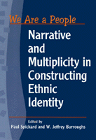

<body bgcolor="#FFFFFF" text="#000000" link="#0000FF" vlink="#CC0000" alink="#CC0000"><center><hr width="350" size="1" align="center" noshade>The stories we tell about ourselves<hr width="350" size="1" align="center" noshade><p><a href="https://cdcshoppingcart.uchicago.edu/Cart/ChicagoBook.aspx?ISBN=9781566397223&&PRESS=temple" target="_top">Buy this book!</a> | <a href="https://cdcshoppingcart.uchicago.edu/Cart/Cart.aspx?PRESS=temple" target="_top">View Cart</a> | <a href="https://cdcshoppingcart.uchicago.edu/Cart/Cart.aspx?PRESS=temple" target="_top">Check Out</a></p><p></p></center><!--none//--><h1>We Are a People</h1>
<H2>Narrative and Multiplicity in Constructing Ethnic Identity</H2>
<h3>edited by Paul Spickard and W. Jeffrey Burroughs</h3>
<P>cloth 1-56639-722-7 $76.50, Jan 00, <FONT COLOR=#990033>Out of Stock Unavailable</FONT>
<br>paper 1-56639-723-5 $37.95, Jan 00, <FONT COLOR=#990033>Available</FONT>
<BR> 304 pp
7x10
5&nbsp;tables 5&nbsp;figures
</P><P>As the twentieth century closes, ethnicity stands out as a powerful force for binding people together in a sense of shared origins and worldview. But this emphasis on a people's uniqueness can also develop into a distorted rationale for insularity, inter-ethnic animosity, or, as we have seen in this century, armed conflict. Ethnic identity clearly holds very real consequences for individuals and peoples, yet there is not much agreement on what exactly it is or how it is formed.
<p>The growing recognition that ethnicity is not fixed and inherent, but elastic and constructed, fuels the essays in this collection. Regarding identity as a dynamic, on-going, formative and transformative process, <i>We Are a People</i> considers narrative&#151the creation and maintenance of a common story&#151as the keystone in building a sense of peoplehood. Myths of origin, triumph over adversity, migration, and so forth, chart a group's history, while continual additions to the larger narrative stress moving into the future as a people.
<p>Still, there is more to our stories as individuals and groups. Most of us are aware that we take on different roles and project different aspects of ourselves depending on the situation. Some individuals who have inherited multiple group affiliations from their families view themselves not as this or that but all at once. So too with ethnic groups. The so-called hyphenated Americans are not the only people in the world to recognize or embrace their plurality. This relatively recent acknowledgment of multiplicity has potentially wide implications, destabilizing the limited (and limiting) categories inscribed in, for example, public policy and discourse on race relations.
<p><i>We Are a People</i> is a path-breaking volume, boldly illustrating how ethnic identity works in the real world.
<BR>&nbsp;<h2>Excerpt</h2><P>Excerpt available at <a href="http://www.temple.edu/tempress">www.temple.edu/tempress</a></p>
<BR>&nbsp;<h2>Contents</h2><P>
<p>Acknowledgments
<br>1. We are a People &#150 Paul Spickard and W. Jeffrey Burroughs
<p><b>Part I: The Indeterminacy of Ethnic Categories: The Problem and A Solution</b>
<br>2. Multiple Ethnicities and Identity Choices in the United States &#150 Mary C. Waters
<br>3. That's the Story of Our Life &#150 Stephen Cornell
<p><b>Part II: Construction of Ethnic Narratives: Migrant Ethnicities</b>
<br>4. Black Immigrants in the United States &#150 Violet M. Johnson
<br>5. The Children of Samoan Migrants in New Zealand &#150 Cluny Macpherson and La'avasa Macpherson
<p><b>Part III: Ethnicities of Dominated Indigenous Peoples</b>
<br>6. Narrating to the Center of Power in the Marshall Islands &#150 Phillip H. McArthur
<br>7. Discovered Identities and American-Indian Supratribalism &#150 Stephen Cornell
<br>8. Racialist Responses to Black Athletic Achievement &#150 Patrick B. Miller
<br>9. I'm Not a Chileno! Rapa Nui Identity &#150 Max E. Stanton and Andr&#233s Edmunds P.
<p><b>Part IV: Emerging Multiethnic Narratives</b>
<br>10. Multiracial Identity in Brazil and the U.S. &#150 G. Reginald Daniel
<br>11. Mixed Laughter &#150 Darby Li Po Price
<br>12. Punjabi Mexican American Experiences of Multiethnicity &#150 Karen Leonard
<p><b>Part V: Theoretical Reflections</b>
<br>13. Rethinking Racial Identity Development &#150 Maria P. P. Root
<br>14. The Continuing Significance of Race &#150 Lori Pierce
<br>15. What Are the Functions of Ethnic Identity? &#150 Cookie White Stephan and Walter G. Stephan
<br>16. Ethnicity, Multiplicity, and Narrative &#150 W. Jeffrey Burroughs and Paul Spickard
<p>Contributors
</P><BR>&nbsp;<H2>About the Author(s)</H2>
<table><tr><td valign="top"><img src="/tempress/authors/1363_au1.gif" height="90" width="75"></td><td width="100%" valign="middle"><p><B>Paul Spickard</B> is Professor and Chair of Asian American Studies at UC Santa Barbara and is author of <i>Mixed Blood</i>.</P></td></tr></table><table><tr><td valign="top"><img src="/tempress/authors/1363_au2.gif" height="90" width="75"></td><td width="100%" valign="middle"><p><br><b>W. Jeffrey Burroughs</b> is Professor of Psychology at Brigham Young University, Hawaii.</P></td></tr></table>
<BR><H2>Subject Categories</H2>
<p><A HREF="/tempress/race.html" TARGET="_top">Race and Ethnicity</a>
<BR><A HREF="/tempress/sociology.html" TARGET="_top">Sociology</a>
</p>
<p align="center"><a href="https://cdcshoppingcart.uchicago.edu/Cart/ChicagoBook.aspx?ISBN=9781566397223&&PRESS=temple" target="_top">Buy this book!</a> | <a href="https://cdcshoppingcart.uchicago.edu/Cart/Cart.aspx?PRESS=temple" target="_top">View Cart</a> | <a href="https://cdcshoppingcart.uchicago.edu/Cart/Cart.aspx?PRESS=temple" target="_top">Check Out</a></p><p><font face="Arial" size="1"><a href="copyright.html" onMouseOver="window.status='Web Copyright Policy';return true;" onMouseOut="window.status=''" title="Web Copyright Policy">&copy;</a> 2015 <a href="http://www.temple.edu" target="new" onMouseOver="window.status='Link to Temple University home page';return true;" onMouseOut="window.status=''" title="Link to Temple University home page">Temple University</a>. All Rights Reserved. http://www.temple.edu/tempress/titles/1363_reg.html</font></p>